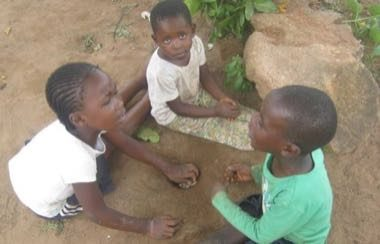

Home / Deep Past and First Games / Africa: Southern Africa
Encyclopedia ID 1346
Nhodo
Nhodo (mbuga stone toss) · mbuga stone toss


Toss one big smooth stone (mbuga) in the air, scoop or arrange the small pebbles on the ground and catch the big one before it lands, through ten stages of rising difficulty.
Heritage note
Part of the living heritage of Zimbabwe.
Origins
Usually placed in the era of Deep Past and First Games (before about 3000 BCE), although its exact origins are uncertain, within the cultural world of Africa: Southern Africa.
Sources
Related entries
Diketo
South Africa +2 · Dexterity and skill gamesStreet games
Bahamas · Dexterity and skill gamesSeed throwing
Cambodia · Dexterity and skill gamesSeven-pebble toss game
Cameroon · Dexterity and skill gamesHopscotch
Haiti +5 · Dexterity and skill gamesGilbert Islands string figures
Kiribati · Dexterity and skill games